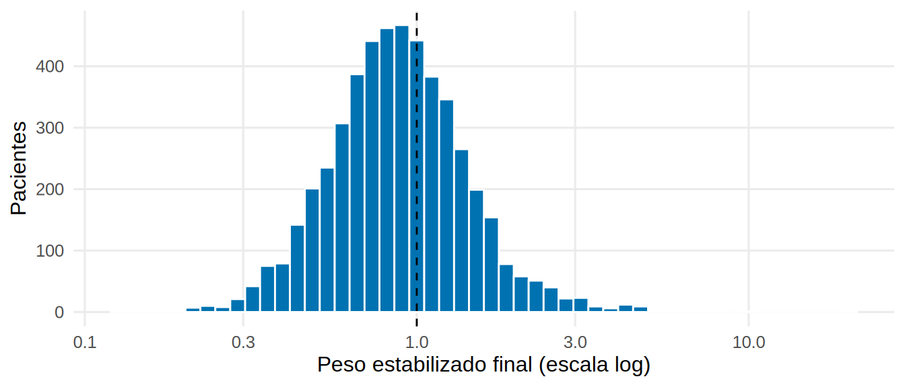
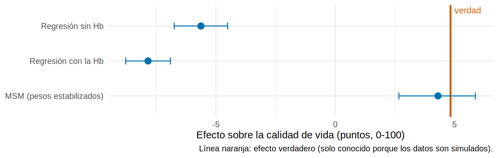

library(tidyverse)
library(sandwich)
library(lmtest)
source("R/funciones_epi.R")
source("R/funciones_extra_a.R") # num(), pct()
source("R/funciones_extra_cap1213.R") # ess(), grafico_estimaciones()
source("R/simular_cap19_epo.R")
source("R/funciones_cap19.R")
theme_set(theme_minimal(base_size = 12) + theme(panel.grid.minor = element_blank()))
hd <- simular_hd_epo(n = 5000, K = 6, semilla = 2024) # la misma cohorte SIMULADA de 19.1
hd_l <- agregar_rezagos(hd) # formato largo, con la dosis y la Hb del mes anterior
ancho <- a_ancho_hd(hd) # formato ancho, para la regresión ordinaria
efecto_verdad <- verdad_hd_epo(n_mc = 200000) |> filter(estrategia == "siempre") |> pull(efecto_vs_nunca) # verdad de 19.1: "siempre" frente a "nunca"Modelos estructurales marginales: ponderar para romper el bucle
Nota🩺 Escenario
Seguimos con la cohorte de hemodiálisis de 19.1. Viste que ni la regresión sin Hb ni la regresión con Hb recuperan el efecto de seis meses de dosis alta de EPO. Imagina ahora que pudieras construir un registro en el que la Hb ya no influyera en la dosis, como si el nefrólogo hubiera asignado la dosis al azar cada mes. No necesitas un ensayo: ponderas a cada paciente para que el registro se parezca a ese ensayo. Eso es un modelo estructural marginal (MSM, marginal structural model).
Lo que vamos a hacer
- Calcular pesos estabilizados acumulados mes a mes (modelo del numerador y del denominador).
- Diagnosticar los pesos: media, valores extremos, tamaño efectivo, truncamiento.
- Ajustar el MSM y calcular el error con errores robustos y con bootstrap por paciente.
- Compararlo con la regresión ordinaria y con la verdad, y entender por qué se estabilizan los pesos.
Paso 1. La idea: una pseudo-población sin el bucle
El nefrólogo da dosis alta más a menudo a quien tiene Hb baja. Para deshacer ese sesgo, damos más peso a los pacientes cuya dosis fue “inesperada” (dosis estándar con Hb baja, dosis alta con Hb alta) y menos a los esperados. En esa pseudo-población la dosis de cada mes deja de depender de la Hb, pero se conserva el efecto de la dosis sobre la calidad de vida. Es el mismo principio del IPW de 3.2, aplicado a cada mes y multiplicado a lo largo del tiempo.
El peso estabilizado de un paciente es el producto, mes a mes, de dos probabilidades de recibir la dosis que realmente recibió:
\[ sw_i = \prod_{t=1}^{6} \frac{P(A_t \mid \text{dosis previas, datos basales})}{P(A_t \mid \text{dosis previas, datos basales, } \mathbf{Hb \text{ hasta el mes } t})} \]
- El denominador es el que “ve” lo mismo que el nefrólogo: incluye la Hb. Es el que quita la confusión.
- El numerador no incluye la Hb. Solo sirve para estabilizar: mantiene los pesos cerca de 1 (lo vemos en el Paso 7).
Paso 2. Los modelos del numerador y del denominador
Son dos regresiones logísticas de la dosis del mes (alta = 1), ajustadas sobre todas las filas paciente-mes. Solo se diferencian en la Hb:
f_den <- dosis_alta ~ dosis_previa + hb + edad + dm + tiempo_hd + mes # lo que miraba el nefrólogo
f_num <- dosis_alta ~ dosis_previa + edad + dm + tiempo_hd + mes # igual, sin la Hb
m_den <- glm(f_den, data = hd_l, family = binomial())
m_num <- glm(f_num, data = hd_l, family = binomial())
round(exp(coef(m_den)), 2) # odds ratio de recibir dosis alta (Intercept) dosis_previa hb edad dm tiempo_hd
973.98 2.08 0.55 0.98 1.36 1.00
mes
1.00 or_hb <- unname(exp(coef(m_den)["hb"]))
or_prev <- unname(exp(coef(m_den)["dosis_previa"]))Qué vemos: por cada 1 g/dL más de Hb, los odds de recibir dosis alta se multiplican por 0.55 (la Hb baja empuja a subir la dosis), y haber recibido dosis alta el mes anterior los multiplica por 2.1 (la dosis tiende a mantenerse). Eso es justo la confusión que dependía del tiempo, ahora medida.
Paso 3. Un peso por paciente y mes, y su producto
pesos_msm() (en R/funciones_cap19.R) calcula, para cada fila, la probabilidad de la dosis recibida con cada modelo y multiplica los cocientes a lo largo de los meses (cumprod). Mira al paciente 2, que recibió dosis alta con una Hb baja en el mes 1:
hd_w <- pesos_msm(hd_l, f_num, f_den) # añade p_num, p_den, sw (estabilizado) y w_ns (sin estabilizar)
hd_w |>
filter(id == 2) |>
transmute(mes, hb = round(hb, 1), dosis_alta, p_num = round(p_num, 2), p_den = round(p_den, 2),
cociente = round(p_num / p_den, 2), sw = round(sw, 2))# A tibble: 6 × 7
mes hb dosis_alta p_num p_den cociente sw
<int> <dbl> <dbl> <dbl> <dbl> <dbl> <dbl>
1 1 10.1 1 0.33 0.42 0.79 0.78
2 2 11.6 1 0.38 0.39 0.97 0.76
3 3 11.4 1 0.37 0.41 0.9 0.68
4 4 10.7 1 0.36 0.5 0.72 0.48
5 5 11.2 1 0.35 0.43 0.81 0.39
6 6 12.5 0 0.66 0.74 0.89 0.35Qué vemos: p_num y p_den son la probabilidad de la dosis que sí recibió. Cuando p_den es menor que p_num (la dosis fue menos esperada de lo que sugiere la Hb), el cociente supera 1 y el paciente pesa más. El peso sw del mes 6 es el producto de los seis cocientes. En este paciente todos los cocientes son menores que 1 (sus dosis eran las esperadas según su Hb) y su peso final es bajo (0.35).
Paso 4. Diagnóstico de los pesos
Antes de usar los pesos hay que mirarlos. Resumimos el peso final de cada paciente (el del mes 6):
fin <- pesos_finales(hd_w) # una fila por paciente: dosis acumulada, peso final, covariables y desenlace
diag_pesos <- tibble(
peso = c("Estabilizado", "Sin estabilizar"),
media = c(mean(fin$sw), mean(fin$w_ns)),
minimo = c(min(fin$sw), min(fin$w_ns)),
p99 = c(quantile(fin$sw, 0.99), quantile(fin$w_ns, 0.99)),
maximo = c(max(fin$sw), max(fin$w_ns)),
tam_efectivo = c(ess(fin$sw), ess(fin$w_ns)) # cuántos pacientes "valen" tras ponderar
)
diag_pesos |> mutate(across(where(is.numeric), \(x) round(x, 2)))# A tibble: 2 × 6
peso media minimo p99 maximo tam_efectivo
<chr> <dbl> <dbl> <dbl> <dbl> <dbl>
1 Estabilizado 1 0.13 3.21 20.3 3521.
2 Sin estabilizar 65.4 2.54 348. 6410. 1096.ggplot(fin, aes(sw)) +
geom_histogram(bins = 50, fill = "#0072B2", color = "white") +
geom_vline(xintercept = 1, linetype = "dashed") +
scale_x_log10(breaks = c(0.1, 0.3, 1, 3, 10, 30)) +
labs(x = "Peso estabilizado final (escala log)", y = "Pacientes")
Qué vemos: el peso estabilizado tiene media 0.996 (debe ser cercana a 1: si no, algún modelo está mal) y va de 0.13 a 20.3. El tamaño efectivo es 3 521 de 5 000 pacientes: ponderar nos cuesta información, pero no la destruye. Sin estabilizar, el peso medio es 65.5 y el máximo, 6 410: pocos pacientes dominarían el análisis (tamaño efectivo de solo 1 096).
hd_w |> group_by(mes) |> summarise(media = mean(sw), de = sd(sw), maximo = max(sw)) |>
mutate(across(where(is.numeric), \(x) round(x, 2)))# A tibble: 6 × 4
mes media de maximo
<dbl> <dbl> <dbl> <dbl>
1 1 1 0.28 2.93
2 2 1 0.36 5.44
3 3 1 0.47 10.0
4 4 1 0.5 8.29
5 5 1 0.54 10.5
6 6 1 0.65 20.3 La dispersión crece cada mes porque se multiplican más factores. Con seguimientos largos (2 o 3 años mensuales) los pesos se vuelven difíciles de manejar.
Paso 5. El MSM: una regresión ponderada
El modelo estructural es muy simple: la calidad de vida media que tendría toda la población según los meses de dosis alta. Se ajusta con una regresión lineal ponderada por sw. Como la comparación ya está “limpia”, no se incluye la Hb. Se incluyen las covariables basales porque están en el numerador:
msm <- ajustar_msm(fin, peso = "sw") # calidad_vida ~ dosis_acum + edad + dm + tiempo_hd, con pesos sw
coeftest(msm, vcov = vcovHC(msm, type = "HC1"))["dosis_acum", ] |> round(3) # errores robustos (sandwich) Estimate Std. Error t value Pr(>|t|)
0.718 0.141 5.103 0.000 El coeficiente de dosis_acum es el efecto de un mes más de dosis alta. Multiplicado por 6, el de seis meses de dosis alta frente a ninguno. Los errores robustos (sandwich) son necesarios porque con pesos el error del lm común no es válido. Pero no incorporan que los pesos se estimaron; por eso repetimos todo (modelos de los pesos y MSM) en 200 remuestras de pacientes (bootstrap), manteniendo juntas todas las filas de cada paciente:
est_msm <- efecto_msm(hd_l, f_num, f_den) # estimación puntual (x 6)
ic_boot <- bootstrap_pacientes(hd_l, \(x) efecto_msm(x, f_num, f_den), B = 200, semilla = 192)
rb <- coeftest(msm, vcov = vcovHC(msm, type = "HC1"))["dosis_acum", ]
c(estimado = est_msm, ee_robusto = 6 * unname(rb["Std. Error"]), ee_bootstrap = unname(ic_boot["ee"]),
ic_inf = unname(ic_boot["inf"]), ic_sup = unname(ic_boot["sup"])) |> round(2) estimado ee_robusto ee_bootstrap ic_inf ic_sup
4.31 0.84 0.82 2.67 5.88 Qué vemos: el MSM estima 4.31 puntos por seis meses de dosis alta (IC 95 % por bootstrap: 2.67 a 5.88), frente a la verdad de 4.83. El intervalo contiene la verdad. El error estándar robusto (0.84) y el del bootstrap (0.82) son del mismo orden. En un artículo, usa al menos 1 000 remuestras (aquí 200 para que se ejecute rápido).
Paso 6. Frente a la regresión ordinaria y a la verdad
efecto_6m <- function(modelo, k = 6) {
b <- coef(summary(modelo))["dosis_acum", ]
tibble(estimado = unname(k * b[1]), ic_inf = unname(k * (b[1] - 1.96 * b[2])), ic_sup = unname(k * (b[1] + 1.96 * b[2])))
}
basal <- "dosis_acum + edad + dm + tiempo_hd"
hb_todas <- paste0("hb_", 1:6, collapse = " + ")
comparacion <- bind_rows(
`Regresión sin Hb` = efecto_6m(lm(as.formula(paste("calidad_vida ~", basal)), ancho)),
`Regresión con la Hb` = efecto_6m(lm(as.formula(paste("calidad_vida ~", basal, "+", hb_todas)), ancho)),
`MSM (pesos estabilizados)` = tibble(estimado = est_msm, ic_inf = unname(ic_boot["inf"]), ic_sup = unname(ic_boot["sup"])),
.id = "metodo")
comparacion |> mutate(across(where(is.numeric), \(x) round(x, 2)))# A tibble: 3 × 4
metodo estimado ic_inf ic_sup
<chr> <dbl> <dbl> <dbl>
1 Regresión sin Hb -5.63 -6.75 -4.51
2 Regresión con la Hb -7.85 -8.79 -6.91
3 MSM (pesos estabilizados) 4.31 2.67 5.88grafico_estimaciones(comparacion, efecto_verdad, etiqueta_x = "Efecto sobre la calidad de vida (puntos, 0-100)")
Qué vemos: las dos regresiones quedan lejos de la verdad y del lado equivocado (-5.63 y -7.85); el MSM (4.31) se acerca a ella y recupera el signo y el orden de magnitud del efecto. Nota que el MSM es menos preciso que la regresión (intervalo más ancho): es el precio de ponderar.
Paso 7. ¿Por qué estabilizar los pesos? Un experimento
Una estimación aislada no demuestra nada. Repetimos el estudio 40 veces con cohortes nuevas de 3 000 pacientes (semillas distintas) y comparamos cuatro formas de analizar: MSM con pesos estabilizados, MSM con pesos sin estabilizar, MSM con pesos estabilizados truncados a los percentiles 1 y 99, y la regresión cruda:
una_cohorte <- function(semilla) {
d <- agregar_rezagos(simular_hd_epo(n = 3000, K = 6, semilla = semilla))
f <- pesos_finales(pesos_msm(d, f_num, f_den))
c(`Estabilizado` = 6 * coef(ajustar_msm(f, "sw"))[["dosis_acum"]],
`Sin estabilizar` = 6 * coef(ajustar_msm(f, "w_ns", covariables = character()))[["dosis_acum"]], # sin numerador, el MSM va sin covariables
`Estabilizado truncado (1-99)` = 6 * coef(ajustar_msm(f, "sw", truncar = c(0.01, 0.99)))[["dosis_acum"]],
`Regresión cruda` = 6 * coef(lm(calidad_vida ~ dosis_acum, f))[["dosis_acum"]])
}
exper <- map(1000 + 1:40, una_cohorte) |> bind_rows()
resumen_exper <- exper |>
pivot_longer(everything(), names_to = "metodo", values_to = "estimado") |>
group_by(metodo) |>
summarise(media = mean(estimado), de = sd(estimado), sesgo = mean(estimado) - efecto_verdad) |>
arrange(desc(metodo))
resumen_exper |> mutate(across(where(is.numeric), \(x) round(x, 2)))# A tibble: 4 × 4
metodo media de sesgo
<chr> <dbl> <dbl> <dbl>
1 Sin estabilizar 4.51 1.53 -0.32
2 Regresión cruda -5.56 0.74 -10.4
3 Estabilizado truncado (1-99) 3.59 0.81 -1.25
4 Estabilizado 4.82 0.88 -0.01g <- \(m, col) resumen_exper[[col]][resumen_exper$metodo == m]Qué vemos (verdad: 4.83):
- El MSM con pesos estabilizados promedia 4.82 (sesgo -0.01) con una desviación entre estudios de 0.88.
- Sin estabilizar el promedio es parecido (4.51), pero la desviación sube a 1.53: el mismo método, más ruido, porque unos pocos pacientes pesan muchísimo.
- Truncar reduce la variabilidad (0.81), pero introduce sesgo (-1.25): recorta a los pacientes con los pesos más grandes (los de trayectorias menos esperadas), que dejan de representar a todos los pacientes parecidos que no aparecen en la base. Es un compromiso sesgo-varianza, no una mejora gratuita.
- La regresión cruda promedia -5.56: sesgada siempre, no por azar.
Si vas a truncar, dilo y repite el análisis sin truncar: el lector debe poder ver cuánto cambia.
Paso 8. Cuando la intercambiabilidad secuencial se rompe
Todo lo anterior funciona porque el nefrólogo simulado decide solo con lo registrado. Supón ahora que además mira la inflamación (por ejemplo, por una PCR que no queda en la base de datos) y sube la dosis cuando la ve alta, aunque la Hb sea la misma. Los pesos solo conocen la Hb, así que no pueden corregirlo:
hd_u <- agregar_rezagos(simular_hd_epo(n = 5000, K = 6, semilla = 2024, efecto_u_en_a = 0.5)) # la inflamación influye en la dosis
est_u <- efecto_msm(hd_u, f_num, f_den)
tibble(escenario = c("El nefrólogo decide solo con lo registrado", "El nefrólogo también mira la inflamación (no registrada)"),
MSM = c(est_msm, est_u), verdad = efecto_verdad) |> mutate(across(where(is.numeric), \(x) round(x, 2)))# A tibble: 2 × 3
escenario MSM verdad
<chr> <dbl> <dbl>
1 El nefrólogo decide solo con lo registrado 4.31 4.83
2 El nefrólogo también mira la inflamación (no registrada) -2.69 4.83El MSM pasa de 4.31 a -2.69 (verdad: 4.83). Los pacientes más inflamados reciben más dosis alta y tienen peor calidad de vida, y los pesos no lo ven. Ningún diagnóstico de los pesos (media, extremos, balance) lo habría delatado: los pesos siguen “bien portados”. Es un confusor no medido dependiente del tiempo.
Advertencia⚠️ Pesos extremos y positividad
Pesos enormes suelen indicar violación de la positividad: combinaciones de pasado en las que casi nadie recibe una de las dos dosis. Truncar los baja, pero cambia lo que estimas (Paso 7). Antes de truncar, revisa los modelos (¿falta alguna interacción?), acorta el seguimiento o redefine la estrategia. Y recuerda que el MSM de dosis acumulada supone que cada mes de dosis alta suma lo mismo; en estos datos el efecto del primer mes es mayor que el del último (lo verás en 19.3), así que dosis_acum es un resumen razonable pero aproximado.
Con el paquete ipw (código no verificado en el entorno de pruebas del libro), el mismo cálculo de pesos acumulados se hace con ipwtm(). El argumento type = "all" indica que el tratamiento puede cambiar en cualquier visita:
library(ipw)
pesos_ipw <- ipwtm(exposure = dosis_alta, family = "binomial", link = "logit",
numerator = ~ dosis_previa + edad + dm + tiempo_hd,
denominator = ~ dosis_previa + hb + edad + dm + tiempo_hd,
id = id, timevar = mes, type = "all", data = as.data.frame(hd_l))
summary(pesos_ipw$ipw.weights) # debería parecerse al peso estabilizado "sw" de esta página
Importante🎯 En resumen
- El MSM con pesos construye una pseudo-población en la que la Hb ya no decide la dosis: peso = producto, mes a mes, de P(dosis | pasado de tratamiento) / P(dosis | pasado de tratamiento y Hb).
- Los pesos estabilizados deben tener media ≈ 1 (aquí 1.00); revisa extremos y tamaño efectivo. Sin estabilizar, la media fue 65 y la variabilidad entre estudios, mayor.
- El MSM recupera el efecto (4.31 frente a la verdad 4.83) donde la regresión ordinaria falla (-5.63 y -7.85), a cambio de menos precisión.
- Los errores se calculan con errores robustos o con bootstrap de pacientes que repita los modelos de los pesos.
- Truncar los pesos es un compromiso sesgo-varianza. Y ningún diagnóstico detecta un confusor no registrado.
Ejercicio
- Calcula el peso estabilizado solo con el modelo del denominador (sin numerador) y vuelve a estimar el MSM con
ajustar_msm(fin, "w_ns", covariables = character()). Compara con el estabilizado. - Usa
truncar = c(0.001, 0.999)yc(0.05, 0.95)enajustar_msm(). ¿Cómo cambian la estimación y su incertidumbre? - Cambia
efecto_u_en_aa 0.2 en el Paso 8. ¿A partir de qué valor el MSM deja de contener la verdad dentro de ±1 punto?
Referencias
- Robins JM, Hernán MA, Brumback B. Marginal structural models and causal inference in epidemiology. Epidemiology. 2000;11:550-560.
- Hernán MA, Robins JM. Causal Inference: What If. Chapman & Hall/CRC; 2020. (Caps. 12 y 14-15).
- Cole SR, Hernán MA. Constructing inverse probability weights for marginal structural models. Am J Epidemiol. 2008;168:656-664.
- Daniel RM, Cousens SN, De Stavola BL, Kenward MG, Sterne JA. Methods for dealing with time-dependent confounding. Stat Med. 2013;32:1584-1618.
- Thoemmes F, Ong AD. A primer on inverse probability of treatment weighting and marginal structural models. Emerging Adulthood. 2016;4:40-59.
- Heiss A. (blog), https://www.andrewheiss.com/blog/ (lectura recomendada por el autor; la idea de pesos acumulados y modelos estructurales marginales con datos de panel sigue sus entradas sobre el tema; el caso, la simulación y el código de este subcapítulo son propios).